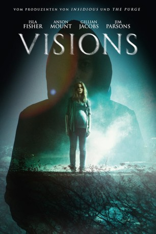

#9495 Visions
 
 IMDB-Wertung: 5.3 / 10
IMDB-Wertung: 5.3 / 10  Tomatometer: 19
Tomatometer: 19  Metascore: 0
Metascore: 0 
Die schwangere Eveleigh zieht mit ihrem Mann David auf ein wunderschönes Weingut, um dem hektischen Stadtleben zu entkommen. Doch die Ruhe ist nur von kurzer Dauer – schon bald wird sie von schrecklichen Geräuschen und Visionen einer zwielichtigen vermummten Person geplagt. Niemand sonst kann diese Halluzinationen wahrnehmen, auch David nicht – umso mehr sorgt er sich um den Zustand seiner Frau. Verzweifelt versucht Eveleigh zu beweisen, dass sie nicht wahnsinnig ist. Durch Erkundigungen im Ort findet sie heraus, dass ihr neu erworbenes Weingut von einem Fluch belastet ist. Doch als die Puzzle-Teile schließlich zusammenpassen, ergibt sich ein völlig anderes Bild – und dadurch gerät Eveleigh mit ihrem Kind in weitaus größere Gefahr, als sie sich jemals vorstellen konnte.
Jahr: 2015
Dauer: 82 Minuten
FSK: 16
Land: USA Studio: UPHETonspuren: DTS - ,
Untertitel: Deutsch,
Auflösung: 1080p (1920x792) Größe: 3543 MB
Genre: Horror, Mystery
Regisseur: Kevin Greutert
Drehbuch: Lucas Sussman, L.D. Goffigan
Soundtrack: Anton Sanko
Darsteller:
 Isla Fisher als Eveleigh Maddox
Isla Fisher als Eveleigh Maddox Anson Mount als David Maddox
Anson Mount als David Maddox Gillian Jacobs als Sadie
Gillian Jacobs als Sadie Joanna Cassidy als Helena
Joanna Cassidy als Helena Eva Longoria als Eileen
Eva Longoria als Eileen Jim Parsons als Dr. Mathison
Jim Parsons als Dr. Mathison- Michael Villar als Leo
 Bryce Johnson als Ben
Bryce Johnson als Ben John de Lancie als Victor Napoli
John de Lancie als Victor Napoli- Annie Tedesco als Victoria Lambert
- Roberto 'Sanz' Sanchez als Emilio
- Jeff Branson als Glenn Barry
- Elizabeth Rowin als Betty Sayles
- Christine Corpuz als Yoga Instructor
- Tina D'Marco als Old Woman
- Alison Trumbull als Party Guest #1
- Katy Yoder als Party Guest #2
 Brianne Brozey als Wine Connoisseur (uncredited)
Brianne Brozey als Wine Connoisseur (uncredited)- Mandell Frazier als Detective (uncredited)
- Christine Meier als Mrs. Peterson
- Chloe Meier als Rose Peterson
- Jason McNichols als Junkie
Datei: X:\2015(N-Z)\Visions (2015, FSK16, 1920x792).mkv seit 05.09.2018
Festplatte: HD 2015(A-Z)
 Es gibt insgesamt 161 Filme in der Gruppe '2015(N-Z)'
Es gibt insgesamt 161 Filme in der Gruppe '2015(N-Z)'